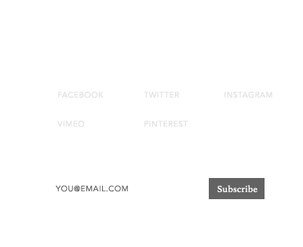
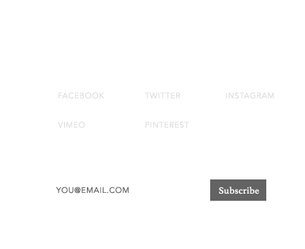

Implementation
PROCESS LOG 5
April 07, 2015
I mapped out all the the screens that I intent to show in my prototype. Because it’s a website, the prototype will be hosted in the browser (but will not be entirely built out in code). What will be fully functional in code are: The nav bar, the framework for the feature articles, and the positioning of all of the content. There will be a total of 9-11 screens that I’ll be showing, as well as explaining the high-level view of some departments.
The final name of the publication is Wayward Bound, exploring creative persistence. It’s a quarterly publication, with each issue address a focused concern on the path to achieving confidence in our work. I’ll show 4 issues in the archive (with feature covers), and will build out the experience of one of them. The theme of the current, built out issue is “The Importance of Failure” (bringing in my earlier research on failure as a vehicle to greater success). The other issues with explore:
The fear of judgement in our work
Competition and comparison to others
Performance pressure (presentation/ public speaking)
What all of these themes share is the basis of fear. Fear of failing, fear of being judged, fear of not being good enough, and fear of presenting. At the root of it, these topics of fear all act as mental barriers, obstructing our self-confidence. This aligns with Wayward Bound’s mission: to unlock the potential of the individual creative who aims to surpass their mental barriers.
The screens that I’ll be walking through in the mock 4th issue are:
- Home screen (with features of the issue)
- Menu (fixed header)
- 1 base design for feature articles. There will be (at least) 3 articles plugged into the code:
- a case study
- an interview
- a user story
- About page
- 2 minute intro video (”I am Wayward Bound”)
- Editor’s letter
- Call for submissions
- Archives
- Extra (if time allows) Page introducing the prospect of WB in print
I think the struggle, with self driven projects is... The idea that I initially ran with was to have a print-based publication with an associated virtual toolkit. But Brian brought up a considerable point yesterday, that I might be biting off more than I can chew by have the weight of the project be equally dispersed between print and digital. The feedback I recieved was to curate a content map, and let that determine the primary form. Then, maybe, I can design a hybrid between the two: A print magazine that includes a take away tool kit, or a virtual publication that has more features than interviews and articles.
I'm a list writer. (Explain project timeline here...) With that, is my decision: To not define this publication by the platform in which it’s published, rather, to keep the focus in terms of the audience [you, as creators], the content, and the mission. YET (here I go with contradicting myself again], because I am eager to build out a fully flushed out website, [as well as not signing myself up to spend hundreds of dollars on another project this year], I’m going to start with an online publication. Once I’ve starting building a content base to go off of, I’ll consider adding a print artifact as a premium feature.
Some notes compiled from trying to create a name for this publication. It turned out to be more challenging than I imagined, because in order to come up with a name that identifies the intent of the site, I needed to ensure that I actually understood what that intent is. I went back to the first degree proposal I wrote in December, where all of my efforts started with exploiting our fear of failure. I think I got sidetracked significantly from my original purpose, and I had to ask myself: Am I exploring fear? Risk? Confidence?
As I was mind mapping, I came across one word that I latched onto: wayward. It’s defined as being “difficult to control or predict because of unusual or perverse behavior.” Alone it can be taken negatively, so I sought out a companion word to alleviate the negative connotation.
I’m moving forward with the name Wayward Bound. It’s almost an oxymoron, if taken in the context of being bound. But thinking in terms of a bound as a synonym for a leap, it makes the prospect of ‘wayward’ seem like an aspiration. Which aligns with the means of being ‘creative.’ Creativity is defined as “the uniqueness that you bring to any activity that you are doing.” The uniqueness that we seek as creatives stems from being bold in our making.
My ambition for this project is to explore our creative potential through the confidence to take risks. And that’s just it: to form an alignment with my original research of failure, but embracing my most recent curiosities with risk and confidence.
 

© 2015 Beth Chappell
- Terms and Conditions
- Privacy Policy